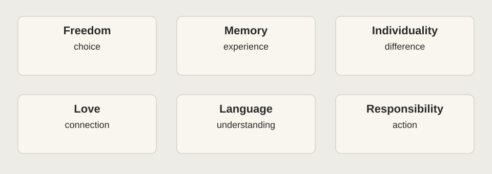

A HUSKYDADDY NOVEL STUDY
Themes
Build an argument that can explain a pattern and answer a complication.
KEY IDEA
A topic names; a theme statement argues.
Build a complete claim that explains a pattern and leaves room for a complication.
Words to know before you read
- Topic
- A subject, such as memory or freedom.
- Theme statement
- A complete argument about what a text suggests about a topic.
On this page

A topic is not yet an argument
Memory is a topic. “Memory can make compassion possible while imposing painful responsibilities” is a theme statement. Build statements that explain a relationship, tension, or condition. Avoid slogans such as “Always be yourself.”
Six connected investigations
Freedom, Choice, and Control
When does protection become control?
Explore this theme →02Memory, Pain, and Wisdom
What can painful knowledge teach that comfort cannot?
Explore this theme →03Individuality and Sameness
How can belonging preserve difference rather than erase it?
Explore this theme →04Love, Family, and Human Connection
What makes care more than a well-performed duty?
Explore this theme →05Language, Truth, and Manipulation
Can words be precise and still conceal the truth?
Explore this theme →06Coming of Age and Moral Responsibility
When does understanding create a duty to act?
Explore this theme →Try the move
Choose a topic. Add what changes, why it matters, and a qualification. Test the result against at least two moments. If one moment challenges it, revise the claim rather than hiding the evidence.
Worked move: observation to qualified argument
Observation: in Chapter 1, Jonas searches for a more accurate feeling word. Topic: language. Weak theme: language is important. Stronger starting argument: careful language can help people reflect while also shaping the categories through which they understand themselves. The stronger version explains a relationship and leaves room for evidence that complicates it.
To test it, identify what the correction makes possible and what it assumes about acceptable expression. After reading farther, compare a second language scene. Revise the argument if that scene works differently. A theme statement should survive contact with complexity, not prevent you from noticing it.